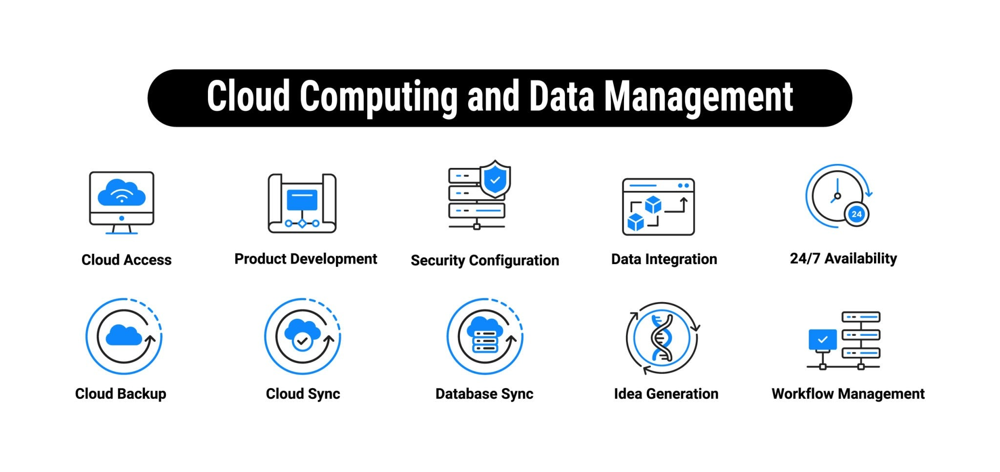
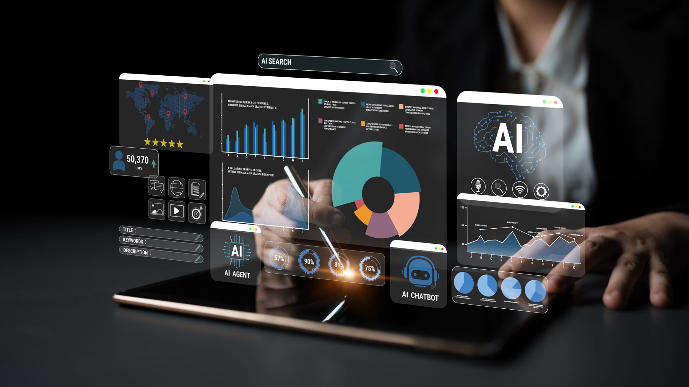
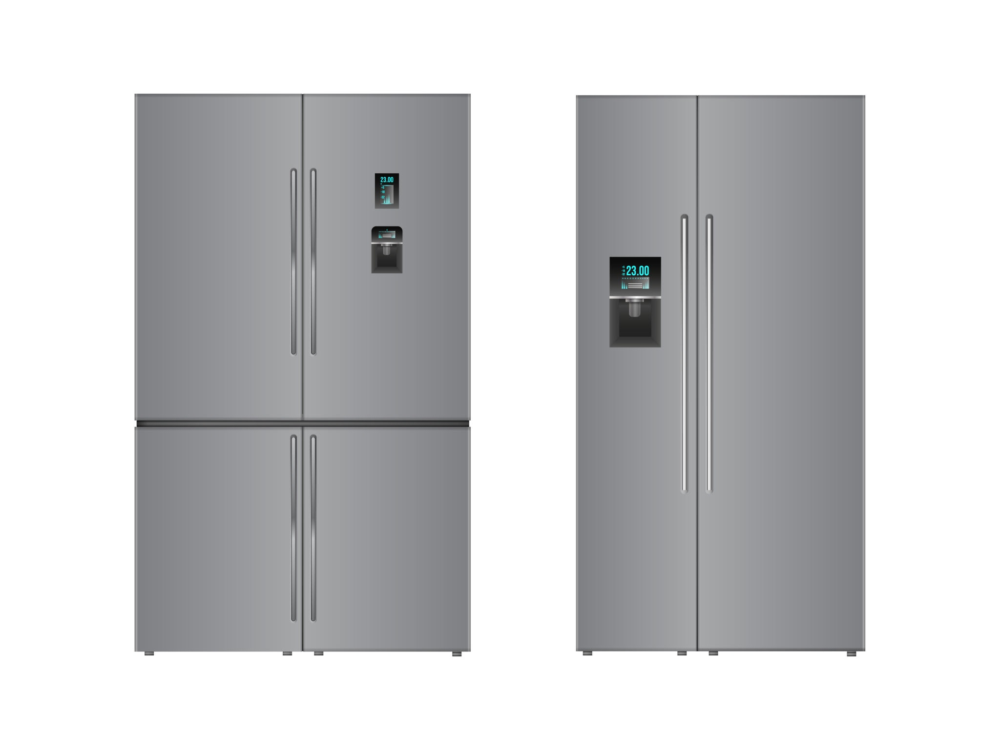
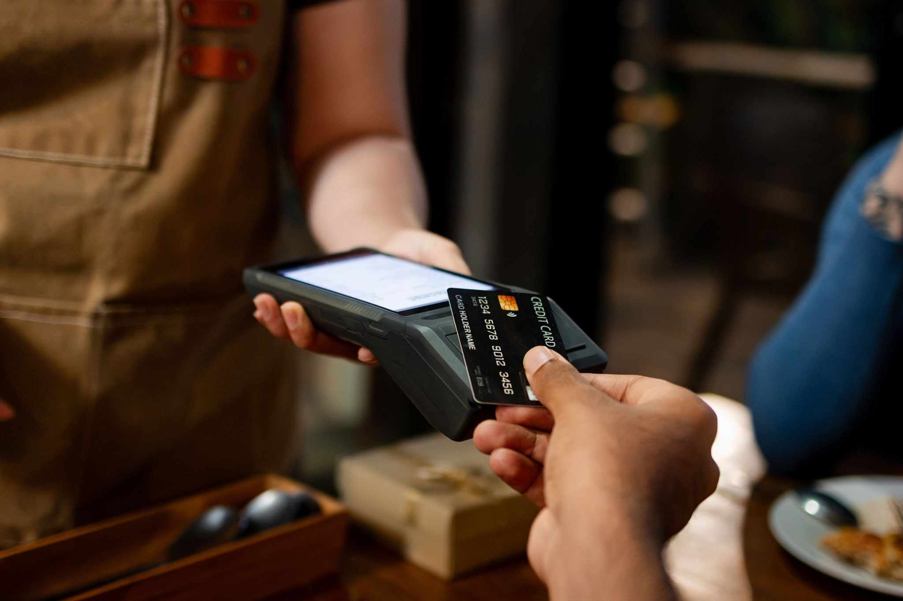
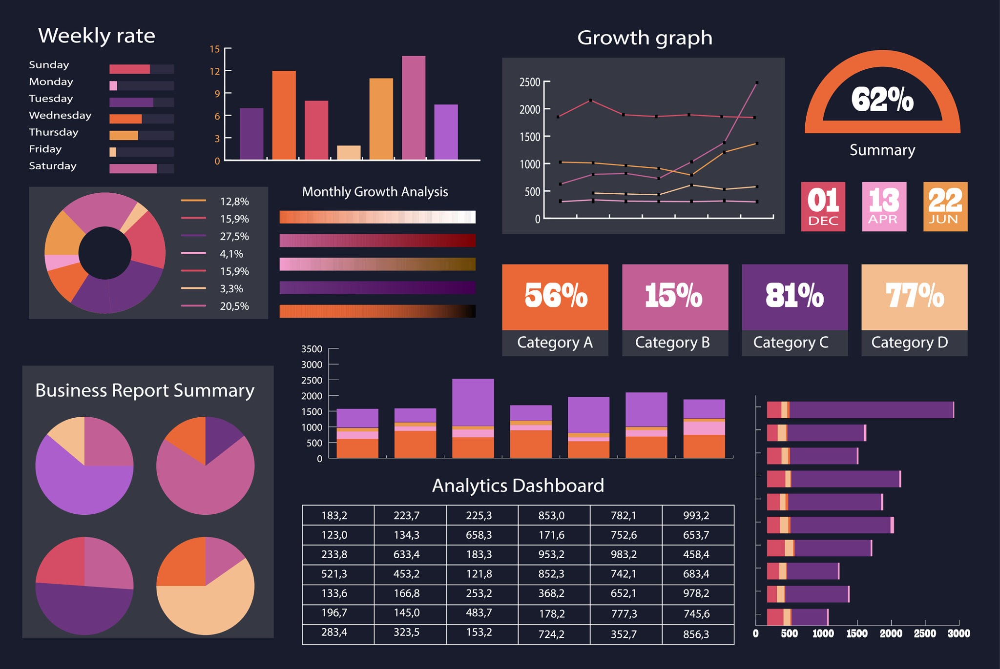
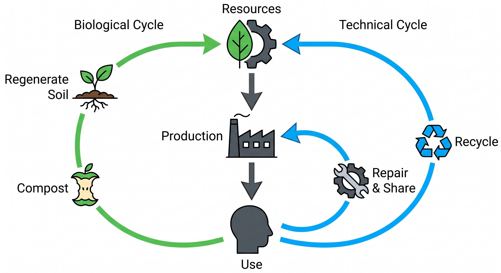

Catálogo de tecnologías, productos y servicios
Las Tecnologías Habilitadoras Digitales (THD) son el conjunto de innovaciones
tecnológicas que impulsan la transformación digital de las empresas, permitiendo conectar procesos
físicos con sistemas inteligentes de análisis y gestión.
En TurisNex adaptamos estas tecnologías al funcionamiento diario de bares y restaurantes
para automatizar tareas repetitivas, reducir el desperdicio alimentario, controlar el consumo energético
y mejorar la rentabilidad sin perder la cercanía con el cliente.
Fichas de tecnologías y soluciones comerciales
1. Cloud Computing (Computación en la Nube)

Definición: Tecnología que permite almacenar datos, ejecutar programas y gestionar
la información del negocio a través de servidores remotos en Internet, evitando depender de ordenadores
o servidores físicos locales.
Características principales:
- Acceso inmediato y sincronizado desde cualquier dispositivo con conexión a Internet.
- Copias de seguridad automáticas que evitan la pérdida de información.
- Escalabilidad flexible según el volumen de trabajo del establecimiento.
Aplicaciones en hostelería: Unificar en tiempo real las reservas web, las comandas tomadas
en sala, el control de stock del almacén y la facturación diaria.
Producto o servicio comercial:
- Nombre comercial: SmartRestaurant
- Descripción: Plataforma centralizada de gestión hostelera en la nube que conecta sala, cocina y administración.
- Precio orientativo: 49 €/mes (tarifa plana de suscripción SaaS que incluye alojamiento en servidor seguro, actualizaciones y soporte técnico).
- Cliente objetivo: Bares, cafeterías y restaurantes independientes que buscan digitalizar su gestión básica.
Entorno de aplicación: Negocio (IT).
2. Inteligencia Artificial (IA) y Machine Learning

Definición: Sistemas informáticos capaces de analizar grandes historiales de datos,
aprender patrones de comportamiento y realizar predicciones automatizadas para ayudar en la toma de decisiones.
Características principales:
- Aprendizaje automático continuo a partir de las ventas anteriores.
- Cruce de variables externas como festivos, clima o eventos en la zona.
- Generación automática de alertas y sugerencias de compra.
Aplicaciones en hostelería: Estimar cuántos clientes acudirán cada día y franja horaria
para ajustar los turnos del personal y calcular las cantidades exactas de materia prima fresca a comprar.
Producto o servicio comercial:
- Nombre comercial: SmartForecast
- Descripción: Sistema inteligente de predicción de reservas, afluencia de demanda y optimización de pedidos a proveedores.
- Precio orientativo: 79 €/mes (justificado por el coste de procesamiento de algoritmos predictivos y el ahorro directo que genera al reducir mermas alimentarias).
- Cliente objetivo: Restaurantes con alta rotación de mesas y producto fresco perecedero.
Entorno de aplicación: Negocio (IT).
3. Internet de las Cosas (IoT)

Definición: Red de sensores y dispositivos físicos conectados a Internet que capturan
datos del entorno real de forma continua y automática sin intervención humana.
Características principales:
- Monitorización inalámbrica en tiempo real las 24 horas del día.
- Envío automático de avisos al móvil ante fallos o valores fuera de rango.
- Automatización del encendido y apagado de maquinaria según ocupación.
Aplicaciones en hostelería: Vigilar la temperatura de cámaras frigoríficas y congeladores
(cumpliendo la normativa sanitaria APPCC) y medir el gasto eléctrico de hornos, campanas y climatización.
Producto o servicio comercial:
- Nombre comercial: SmartKitchen
- Descripción: Kit de sensores inalámbricos de temperatura, humedad y consumo energético conectado a un panel de alertas.
- Precio orientativo: 299 € de instalación inicial + 25 €/mes (los 299 € cubren el hardware de los sensores y su montaje; la cuota mensual cubre la conectividad y el registro sanitario automático).
- Cliente objetivo: Cocinas profesionales con varias cámaras frigoríficas o alto consumo eléctrico.
Entorno de aplicación: Planta / Cocina (OT).
4. Ciberseguridad

Definición: Conjunto de herramientas, protocolos y medidas técnicas diseñadas para proteger
las redes, equipos, pagos y datos del negocio frente a ciberataques, robos o bloqueos.
Características principales:
- Cifrado de comunicaciones en datáfonos y pasarelas de reserva web.
- Separación de redes (aislando la red Wi-Fi de clientes de la red operativa del local).
- Copias de seguridad cifradas y protección contra ransomware.
Aplicaciones en hostelería: Proteger los datos personales de los clientes (cumplimiento del RGPD),
asegurar los cobros con tarjeta y evitar que un ataque informático paralice el servicio en horas punta.
Producto o servicio comercial:
- Nombre comercial: CyberRestaurant
- Descripción: Servicio integral de protección de sistemas, segmentación de redes Wi-Fi, cortafuegos y blindaje de datos.
- Precio orientativo: 59 €/mes (incluye configuración inicial de red segura, monitorización continua ante intrusiones y copias de respaldo externas).
- Cliente objetivo: Todo tipo de negocios hosteleros que gestionen pagos electrónicos y reservas online.
Entorno de aplicación: Ambos (IT y OT).
5. Big Data y Data Analytics

Definición: Tecnología orientada a recopilar, cruzar y analizar grandes volúmenes de datos
procedentes de distintas fuentes para descubrir patrones de rendimiento y mejorar la rentabilidad.
Características principales:
- Integración de datos procedentes del TPV, proveedores, escandallos y reseñas digitales.
- Visualización clara mediante paneles gráficos con indicadores clave (KPI).
- Cálculo exacto del margen de beneficio por cada producto vendido.
Aplicaciones en hostelería: Analizar qué platos dejan mayor margen real, detectar subidas
de precios de proveedores e identificar las franjas horarias más rentables del restaurante.
Producto o servicio comercial:
- Nombre comercial: Business Analytics
- Descripción: Cuadro de mando analítico para el estudio de ventas, escandallos dinámicos y rentabilidad real de la carta.
- Precio orientativo: 69 €/mes (justificado por la integración con el software TPV existente y la generación automatizada de informes financieros).
- Cliente objetivo: Restaurantes consolidados, grupos de restauración y franquicias.
Entorno de aplicación: Negocio (IT).
6. Gemelo Digital
Definición: Réplica virtual dinámica de un espacio o proceso físico que permite simular
cambios organizativos y detectar errores antes de aplicarlos en el local real.
Características principales:
- Modelado digital del plano de cocina y distribución de mesas en sala.
- Simulación de recorridos del personal y tiempos de preparación en horas punta.
- Prueba de cambios sin interrumpir la actividad diaria ni gastar en obras previas.
Aplicaciones en hostelería: Simular el movimiento de camareros y cocineros para eliminar
cruces, reducir tiempos de espera entre pases y optimizar la distribución del mobiliario.
Producto o servicio comercial:
- Nombre comercial: Digital Kitchen
- Descripción: Servicio de modelado virtual y simulación de procesos operativos en cocina y sala.
- Precio orientativo: 499 € por proyecto (pago único calculado en función de las horas de levantamiento de planos, modelado 3D y entrega del informe de mejoras).
- Cliente objetivo: Restaurantes de nueva apertura o locales que van a realizar una reforma.
Entorno de aplicación: Planta / Cocina (OT).
7. Biotecnología Industrial (THD Emergente)

Definición: Tecnología emergente que utiliza microorganismos, enzimas y procesos biológicos
controlados para transformar residuos orgánicos en nuevos recursos útiles y sostenibles.
Características principales:
- Descomposición biológica rápida y sin malos olores mediante cultivos específicos.
- Conversión de desechos orgánicos en biofertilizantes o materiales compostables.
- Disminución de residuos enviados a vertedero y reducción de huella de carbono.
Aplicaciones en hostelería: Aprovechar los restos orgánicos de cocina, pieles vegetales y
posos de café para producir compost de alta calidad o sustratos ecológicos.
Producto o servicio comercial:
- Nombre comercial: BioCircular
- Descripción: Servicio de asesoramiento técnico e implantación de sistemas de valorización biológica de residuos orgánicos.
- Precio orientativo: 199 € por proyecto (incluye auditoría inicial de residuos del local, suministro de biorreactor compacto y formación al personal de cocina).
- Cliente objetivo: Restaurantes comprometidos con la economía circular y sellos de sostenibilidad.
Entorno de aplicación: Planta / Cocina (OT).